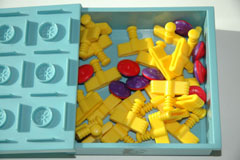
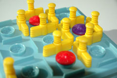
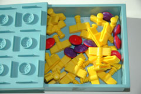
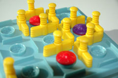

|
 |

|
 |
History
The game of Dots and Boxes was studied extensively by Elwyn Berlekamp
, who in the late 1960s presented the Dots and Boxes theorem at the University of Calgary. While the game is known as a popular children's game, it is actually very sophisticated in nature. A nim-like Sprague-Grundy theory can be applied to Dots and Boxes, which according to Berlekamp because the theory is suppose to only apply to disjoint impartial games. Dots and Boxes, which does not fit the typical mold of impartial games, where the players fight over the last move, also fails to be disjoint.Game Play
The Pieces:
Two different color pens.
Rules:
To move: Connect any vertical or horizontal line between the dots.
To win: To create the most boxes.
Players take turns connecting horizontal or vertical lines between dots. After winning one or more boxes, the player places another line. The player’s turn ends when he or she cannot make a box.
Strategies:
An easy strategy to follow is to make sure that there is an odd number of moves left. Generally, the player to go first will have the advantage.
Variants:
Misere: Force your opponent into creating the most boxes.
Pictures:
|
|
 |
|
 |
References:
Berlekamp's Web page on Dots and Boxes